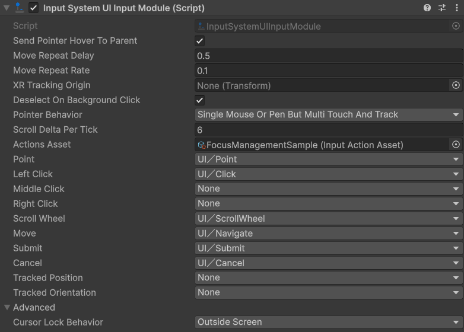

Installation¶
Requirements¶
Review Requirements & Compatibility before importing. The package requires Unity UI (com.unity.ugui) and the Unity Input System (com.unity.inputsystem).
Compatible with Unity 2022.3 LTS and Unity 6. Validated with Built-in, URP, and HDRP.
Import¶
Import the asset into the Unity project through the Asset Store package workflow. Keep the Runtime, Editor, Samples, and Documentation folders together so assembly definitions and sample references remain intact.
If the required Unity packages are not already installed, add Unity UI and Input System through Window > Package Management > Package Manager.
EventSystem setup¶
Each UI scene needs one active EventSystem configured for the New Input System:
- Create or select the scene's
EventSystem. - Use
InputSystemUIInputModuleas its UI input module. - Assign enabled UI actions for navigation, submit, cancel, pointer position, and click as required by the project.
- Avoid running a legacy
StandaloneInputModuleon the sameEventSystem.

InputSystemUIInputModule with Point, Click, Navigate, Submit, Cancel, and Scroll Wheel actions assigned.Add SmartFocusManager to a suitable scene object. Assign its Event System field explicitly, or leave it empty to use EventSystem.current. Explicit assignment is preferable in scenes with unusual initialization order.
To use input-mode-aware focus policy, add SmartInputModeDetector and assign the same UI action references used by InputSystemUIInputModule. The detector observes those actions; it does not enable or disable them.
Input System project setting¶
The project's active input handling must support the New Input System. Smart UI Focus & Navigation does not modify this or any other global project setting automatically.